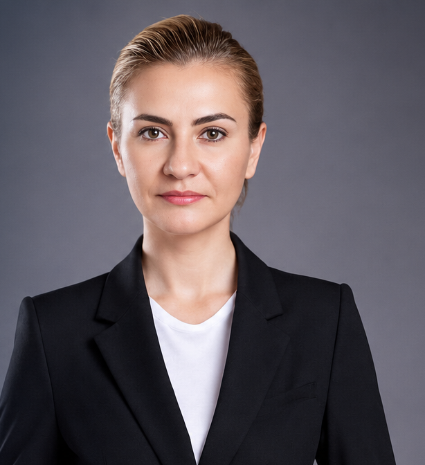
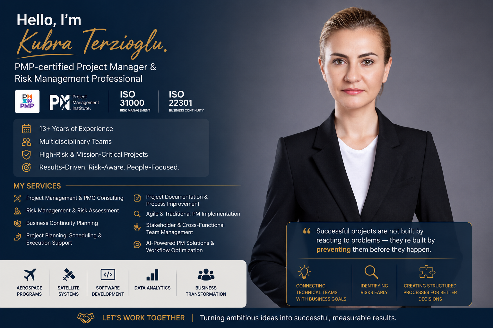

PMP®-certified Project Manager and Risk Management Professional with 13+ years leading complex technology, aerospace, satellite and data analytics programs, results-driven, risk-aware, people-focused.

13+
Years of experience
10
Years on the TURKSAT 6A satellite program
3
Certifications: PMP®, CAPM®, PSM I
4
Major programs: space, defense, data
01
End-to-end planning, scheduling and execution support for complex, mission-critical programs, from kickoff to delivery.
02
Risk identification, analysis and mitigation to ECSS and ISO 31000 standards; risk registers and reporting that reduce real exposure.
03
Scrum ceremonies, backlog refinement and coaching alongside classic milestone-driven delivery, whichever the project needs.
04
Cross-functional coordination between technical teams and business goals; clear communication at every level, up to executive reporting.
05
Structured continuity processes aligned with ISO 22301, plans that are ready before the disruption is.
06
Workflow optimization with AI tools, automation (n8n) and data-driven reporting in Excel and Power BI to support decision-making.
Thirteen years at TUBITAK Space Technologies and Research Institute, coordinating the TURKSAT 6A satellite program, leading risk management to ECSS standards on IMECE, and serving as Scrum Master for cross-functional software teams. Before that, five years of budget analysis at Ziraat Bank. Experienced in applying AI tools, automation and data-driven approaches to improve project outcomes.

TUBITAK Space, 2012–2025
Project coordination on the TURKSAT 6A satellite program: risks, schedules, requirements tracking and stakeholder communication across the full lifecycle.
TUBITAK Space, 2012–2025
Led risk identification, assessment and mitigation to ECSS standards across space projects including IMECE; maintained registers and reported to management.
TUBITAK Space, 2019–2021
Facilitated sprint planning, reviews and retrospectives; coached teams on Agile practice and removed impediments for a TURKSAT 6A software subproject.
Ziraat Bank, 2007–2012
Annual budgets, financial forecasts and variance analysis for senior management; partnered with stakeholders across departments.
“Successful projects are not built by reacting to problems, they’re built by preventing them before they happen.”
Turning ambitious ideas into successful, measurable results.